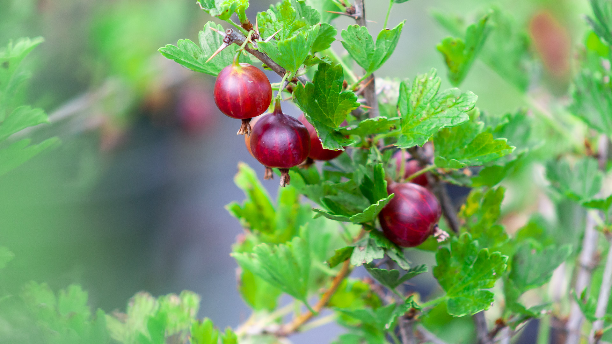

Karviainen
Karviainen
Valikoimastamme löytyy härmän kestävä ”Lepaan Punainen” lajike, jonka marjan koko vaihtelee keskikokoisesta suureen. Marjat ovat melko paksukuorisia ja väriltään tumman punaisia. Aromi on voimakas ja makea. Rakenteeltaan lajike on melko pystykasvuinen.
Taimet tuotetaan 2L pyöreässä ruukussa ja kasvissa on vähintään kolme kasvuversoa.
Lajikkeet
- Lepaan Punainen